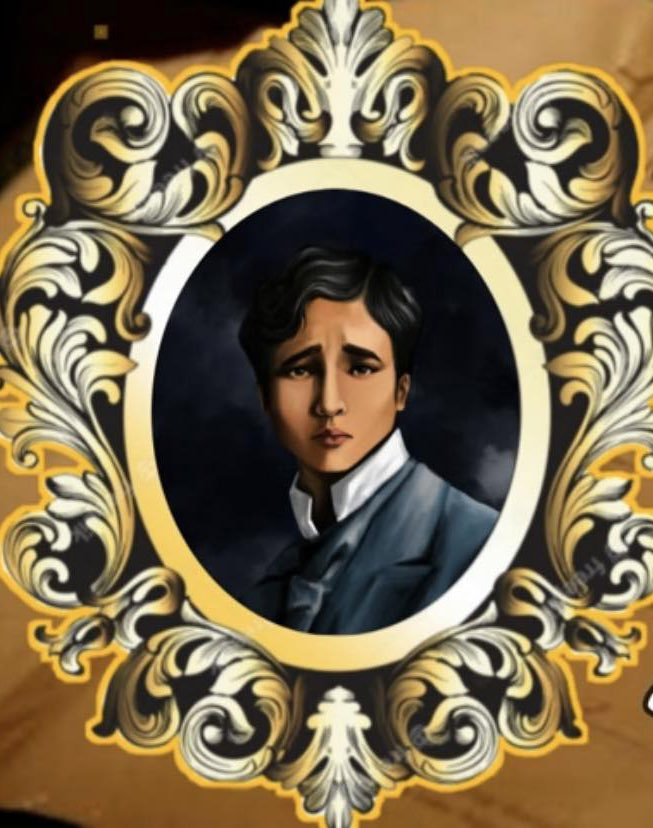
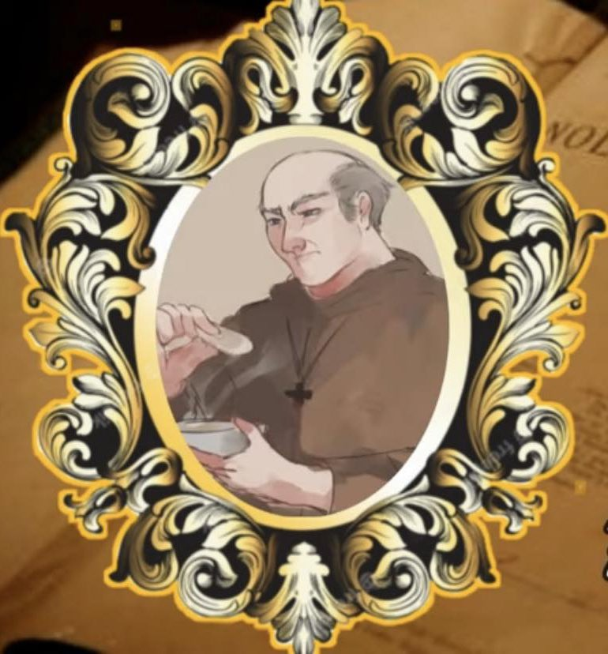
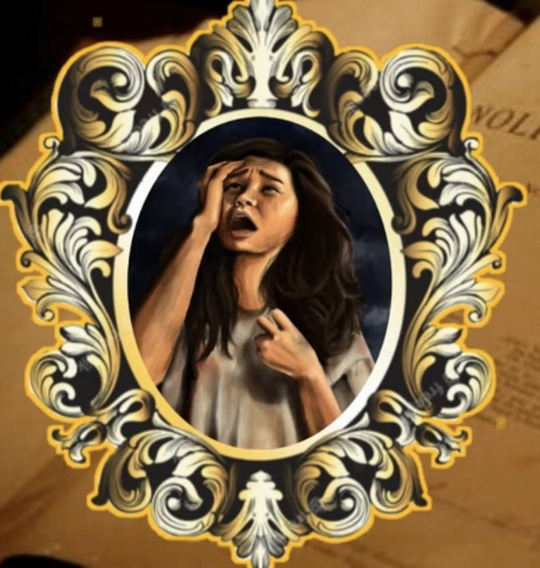
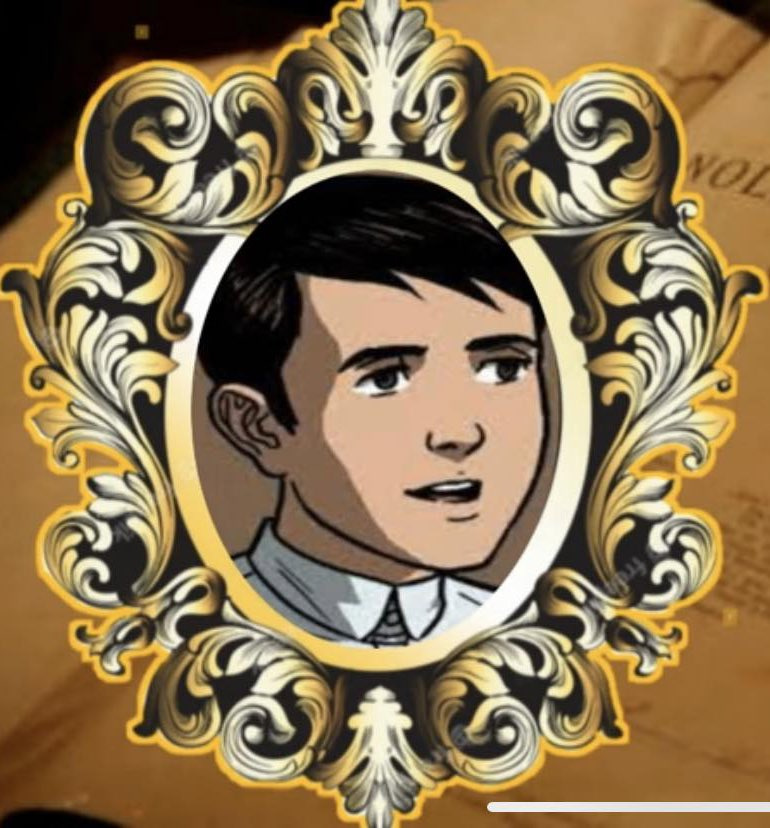

| CHARACTERS IN NOLI MI TANGERE |
|  |
Juan Crisostomo Ibarra |
He is the main character of Noli Mi Tangere.
Ibarra is the son of Don Rafael.
He had returned to the Philippines after studying abroad in Europe. |
 |
Maria Clara |
Maria Clara is the love interest of Crisostomo Ibarra.
Daughter of Pia Alba.
Her real father is Padre Damaso. |
|  |
Padre Damaso |
The real father of Maria Clara
A powerful priest in San Diego |
|  |
Sisa |
Sisa is the mother of Crispin and Basilio.
Sisa is a loving and kind mother to both her children. |
|  |
Basilio |
He is a Sakristan
Basilio has a lot of plants for his family. |